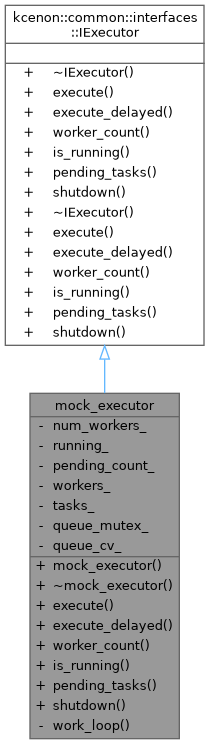
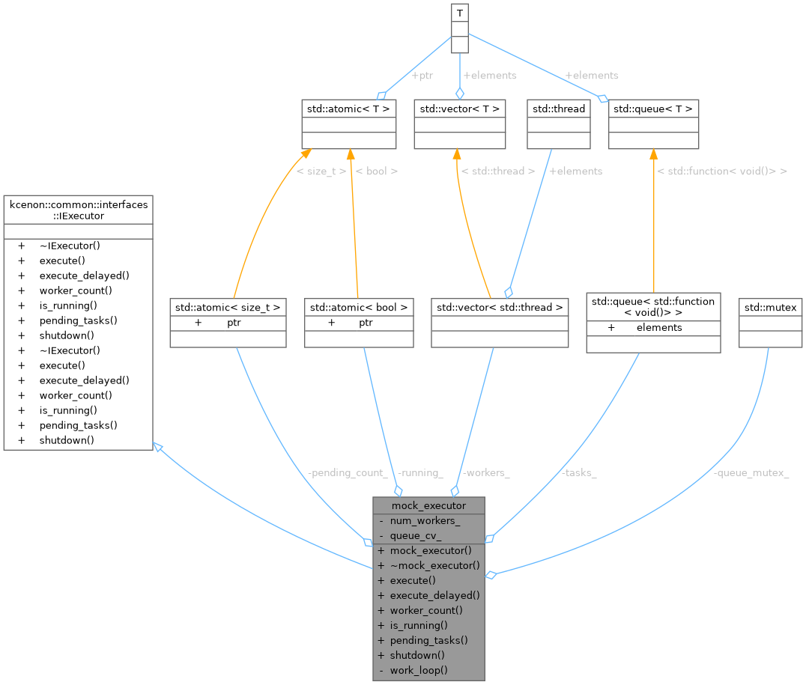
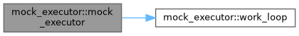
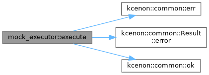
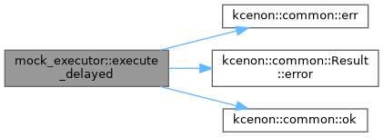
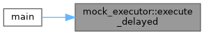
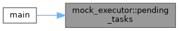
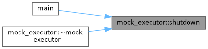
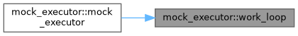
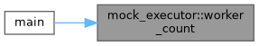

Public Member Functions | |
| mock_executor (size_t num_workers=4) | |
| ~mock_executor () | |
| Result< std::future< void > > | execute (std::unique_ptr< IJob > &&job) override |
| Execute a job with Result-based error handling. | |
| Result< std::future< void > > | execute_delayed (std::unique_ptr< IJob > &&job, std::chrono::milliseconds delay) override |
| Execute a job with delay. | |
| size_t | worker_count () const override |
| Get the number of worker threads. | |
| bool | is_running () const override |
| Check if the executor is running. | |
| size_t | pending_tasks () const override |
| Get the number of pending tasks. | |
| void | shutdown (bool wait_for_completion) override |
| Shutdown the executor gracefully. | |
 Public Member Functions inherited from kcenon::common::interfaces::IExecutor Public Member Functions inherited from kcenon::common::interfaces::IExecutor | |
| virtual | ~IExecutor ()=default |
| virtual | ~IExecutor ()=default |
Private Member Functions | |
| void | work_loop () |
Private Attributes | |
| size_t | num_workers_ |
| std::atomic< bool > | running_ |
| std::atomic< size_t > | pending_count_ {0} |
| std::vector< std::thread > | workers_ |
| std::queue< std::function< void()> > | tasks_ |
| std::mutex | queue_mutex_ |
| std::condition_variable | queue_cv_ |
Detailed Description
Simple mock executor for demonstration
- Examples
- executor_example.cpp.
Definition at line 34 of file executor_example.cpp.
Constructor & Destructor Documentation
◆ mock_executor()
|
inline |
- Examples
- executor_example.cpp.
Definition at line 36 of file executor_example.cpp.
References num_workers_, work_loop(), and workers_.

◆ ~mock_executor()
|
inline |
- Examples
- executor_example.cpp.
Definition at line 44 of file executor_example.cpp.
References shutdown().
Member Function Documentation
◆ execute()
|
inlineoverridevirtual |
Execute a job with Result-based error handling.
- Parameters
-
job The job to execute
- Returns
- Result containing future or error
Job-based execution provides better control and testability
Implements kcenon::common::interfaces::IExecutor.
- Examples
- executor_example.cpp.
Definition at line 49 of file executor_example.cpp.
References kcenon::common::err(), kcenon::common::Result< T >::error(), kcenon::common::ok(), pending_count_, queue_cv_, queue_mutex_, and tasks_.
Referenced by main().

◆ execute_delayed()
|
inlineoverridevirtual |
Execute a job with delay.
- Parameters
-
job The job to execute delay The delay before execution
- Returns
- Result containing future or error
Implements kcenon::common::interfaces::IExecutor.
- Examples
- executor_example.cpp.
Definition at line 84 of file executor_example.cpp.
References kcenon::common::err(), kcenon::common::Result< T >::error(), kcenon::common::ok(), pending_count_, queue_cv_, queue_mutex_, and tasks_.
Referenced by main().


◆ is_running()
|
inlineoverridevirtual |
Check if the executor is running.
- Returns
- true if running, false otherwise
Implements kcenon::common::interfaces::IExecutor.
- Examples
- executor_example.cpp.
Definition at line 126 of file executor_example.cpp.
References running_.
Referenced by main().
◆ pending_tasks()
|
inlineoverridevirtual |
Get the number of pending tasks.
- Returns
- Number of tasks waiting to be executed
Implements kcenon::common::interfaces::IExecutor.
- Examples
- executor_example.cpp.
Definition at line 130 of file executor_example.cpp.
References pending_count_.
Referenced by main().

◆ shutdown()
|
inlineoverridevirtual |
Shutdown the executor gracefully.
- Parameters
-
wait_for_completion Wait for all pending tasks to complete
Implements kcenon::common::interfaces::IExecutor.
- Examples
- executor_example.cpp.
Definition at line 134 of file executor_example.cpp.
References queue_cv_, queue_mutex_, running_, tasks_, and workers_.
Referenced by main(), and ~mock_executor().

◆ work_loop()
|
inlineprivate |
- Examples
- executor_example.cpp.
Definition at line 154 of file executor_example.cpp.
References pending_count_, queue_cv_, queue_mutex_, running_, and tasks_.
Referenced by mock_executor().

◆ worker_count()
|
inlineoverridevirtual |
Get the number of worker threads.
- Returns
- Number of available workers
Implements kcenon::common::interfaces::IExecutor.
- Examples
- executor_example.cpp.
Definition at line 122 of file executor_example.cpp.
References num_workers_.
Referenced by main().

Member Data Documentation
◆ num_workers_
|
private |
- Examples
- executor_example.cpp.
Definition at line 181 of file executor_example.cpp.
Referenced by mock_executor(), and worker_count().
◆ pending_count_
|
private |
- Examples
- executor_example.cpp.
Definition at line 183 of file executor_example.cpp.
Referenced by execute(), execute_delayed(), pending_tasks(), and work_loop().
◆ queue_cv_
|
private |
- Examples
- executor_example.cpp.
Definition at line 187 of file executor_example.cpp.
Referenced by execute(), execute_delayed(), shutdown(), and work_loop().
◆ queue_mutex_
|
private |
- Examples
- executor_example.cpp.
Definition at line 186 of file executor_example.cpp.
Referenced by execute(), execute_delayed(), shutdown(), and work_loop().
◆ running_
|
private |
- Examples
- executor_example.cpp.
Definition at line 182 of file executor_example.cpp.
Referenced by is_running(), shutdown(), and work_loop().
◆ tasks_
|
private |
- Examples
- executor_example.cpp.
Definition at line 185 of file executor_example.cpp.
Referenced by execute(), execute_delayed(), shutdown(), and work_loop().
◆ workers_
|
private |
- Examples
- executor_example.cpp.
Definition at line 184 of file executor_example.cpp.
Referenced by mock_executor(), and shutdown().
The documentation for this class was generated from the following file:
- examples/executor_example.cpp